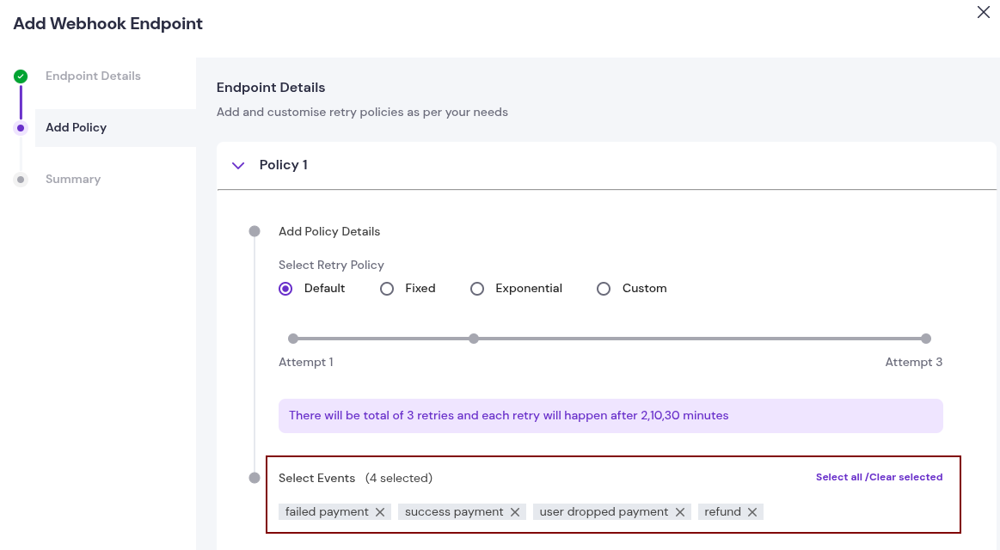
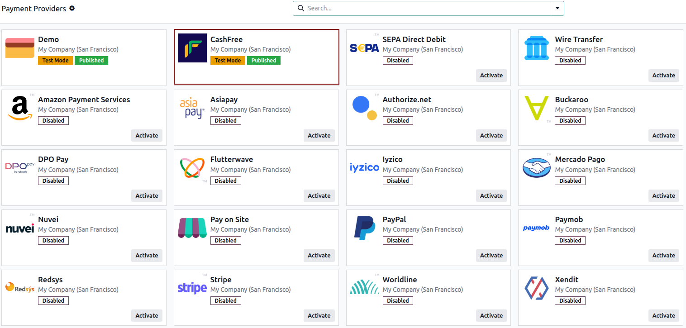
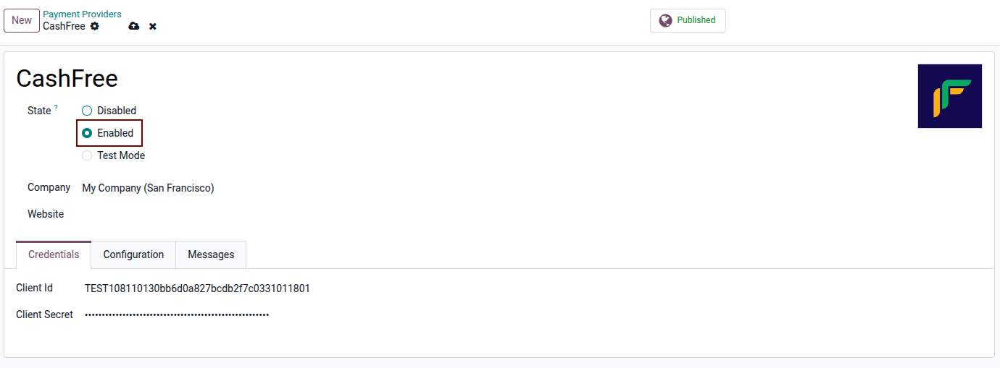
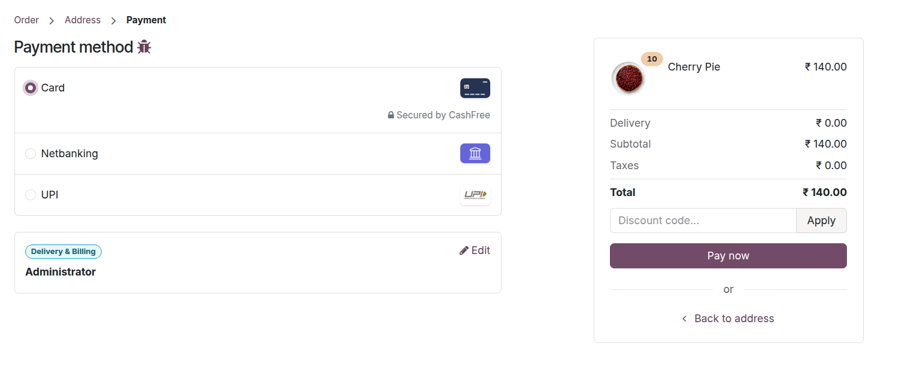

For your onboarding, we invite you to book an appointment using the link provided. During this session, our team
will guide you through the onboarding steps and assist with any setup or clarification you may need:
https://www.odoo.com/book/india-payment-provider
Once logged in, check the account mode in the top bar of the dashboard. Use the Test environment for sandbox testing and switch to Production when you are ready to accept live payments.
/payment/cashfree/webhook as the webhook endpoint.
https://example.odoo.com/payment/cashfree/webhook

Save the webhook configuration to allow Cashfree to send real-time transaction status updates to Odoo.


Once configured, the Cashfree payment methods (UPI, Cards, Net Banking, etc.) will appear automatically on your Odoo website checkout page, based on the settings defined in your Cashfree dashboard.

For any queries or support needs, kindly schedule an appointment via the link below. This will allow our team to
address your concerns directly and provide the necessary guidance:
https://www.odoo.com/book/india-payment-provider